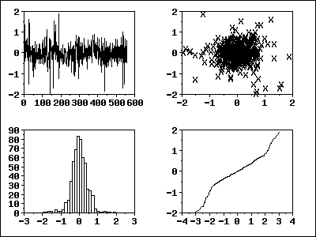
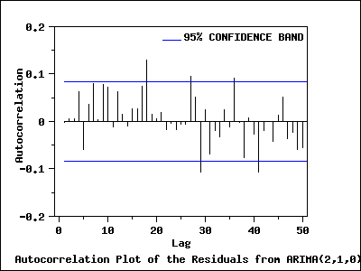
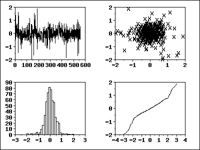
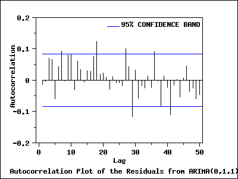

|
6.
Process or Product Monitoring and Control
6.6. Case Studies in Process Monitoring 6.6.2. Aerosol Particle Size
|
|||
| Residuals |
After fitting the model, we should check whether the model is
appropriate.
As with standard non-linear least squares fitting, the primary tool for model diagnostic checking is residual analysis. |
||
| 4-Plot of Residuals from ARIMA(2,1,0) Model |
The 4-plot
is a convenient graphical technique for model validation in that it tests
the assumptions for the residuals on a single graph.
 |
||
| Interpretation of the 4-Plot |
We can make the following conclusions based on the above 4-plot.
|
||
| Autocorrelation Plot of Residuals from ARIMA(2,1,0) Model |
In addition, the
autocorrelation plot
of the residuals from the ARIMA(2,1,0) model was generated.
 |
||
| Interpretation of the Autocorrelation Plot | The autocorrelation plot shows that for the first 25 lags, all sample autocorrelations except those at lags 7 and 18 fall inside the 95 % confidence bounds indicating the residuals appear to be random. | ||
| Test the Randomness of Residuals From the ARIMA(2,1,0) Model Fit | We apply the Box-Ljung test to the residuals from the ARIMA(2,1,0) model fit to determine whether residuals are random. In this example, the Box-Ljung test shows that the first 24 lag autocorrelations among the residuals are zero (p-value = 0.080), indicating that the residuals are random and that the model provides an adequate fit to the data. | ||
| 4-Plot of Residuals from ARIMA(0,1,1) Model |
The 4-plot
is a convenient graphical technique for model validation in that it tests
the assumptions for the residuals on a single graph.
 |
||
| Interpretation of the 4-Plot from the ARIMA(0,1,1) Model |
We can make the following conclusions based on the above 4-plot.
|
||
| Autocorrelation Plot of Residuals from ARIMA(0,1,1) Model |
The autocorrelation plot of the residuals from ARIMA(0,1,1) was
generated.
 |
||
| Interpretation of the Autocorrelation Plot | Similar to the result for the ARIMA(2,1,0) model, it shows that for the first 25 lags, all sample autocorrelations expect those at lags 7 and 18 fall inside the 95% confidence bounds indicating the residuals appear to be random. | ||
| Test the Randomness of Residuals From the ARIMA(0,1,1) Model Fit |
The Box-Ljung test is also applied to the residuals from the
ARIMA(0,1,1) model. The test indicates that there is at least one
non-zero autocorrelation amont the first 24 lags. We conclude that there
is not enough evidence to claim that the residuals are random
(p-value = 0.026).
|
||
| Summary | Overall, the ARIMA(0,1,1) is an adequate model. However, the ARIMA(2,1,0) is a little better than the ARIMA(0,1,1). | ||